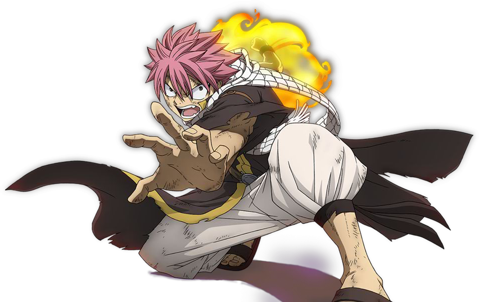
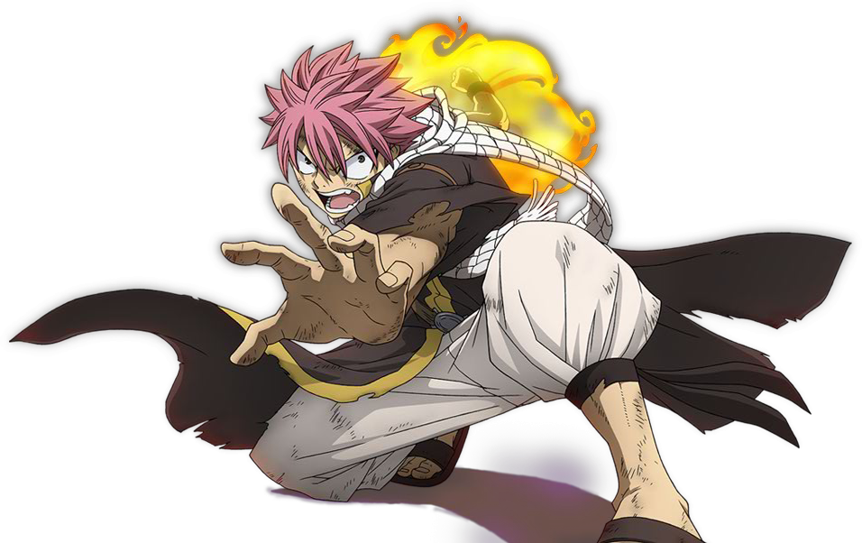

L'histoire débute en Allemagne en 1986, à l'Eisler Memorial Hospital de Düsseldorf. Kenzô Tenma, le personnage principal, est un jeune neurochirurgien japonais aux compétences hors normes. Il est fiancé à Eva Heineman, la fille du directeur de l'hôpital, et est destiné à une brillante carrière. Pourtant, un jour, il refuse de donner en priorité ses soins au maire de la ville et préfère opérer un garçon blessé d'une balle dans la tête, arrivé à l'hôpital avant le maire. La sœur jumelle du garçon, très choquée, est elle aussi hospitalisée ; leurs parents adoptifs viennent d'être assassinés sauvagement chez eux. Le garçon s'en sort, mais le maire, confié à un autre chirurgien, décède. Le Dr Tenma est alors rétrogradé par le directeur de l'hôpital, et sa fiancée le quitte. Peu de temps après, le garçon et sa sœur disparaissent, à la suite des meurtres mystérieux de trois hauts responsables de l'établissement, dont le directeur. Neuf ans plus tard, Tenma découvre l'auteur des meurtres : Johann, ce garçon de 10 ans qu'il avait sauvé semble être devenu un monstre semant la terreur autour de lui. C'est l'inspecteur Runge de la police criminelle — un homme rigide à tendance obsessionnelle — qui reprend en charge l'enquête après la police de province allemande ; il soupçonne évidemment Tenma, qui avait obtenu le poste de chef de service de chirurgie à la suite du décès de ses collègues. S'appuyant sur les faits plutôt que les rumeurs s'amplifiant autour de la personnalité du Dr Tenma, Rünge le poursuit sans relâche, tandis que ce dernier est à la recherche de Johann, pour l'arrêter. Au fil du récit, il est révélé que Johann et sa sœur Anna sont des enfants issus de pratiques eugénistes. Leur jeunesse traumatisante d'enfants-cobayes, parmi d'autres de l'orphelinat du Kinderheim 511, est dévoilée par bribes au gré des épisodes, expliquant les objectifs apocalyptiques de Monster.Johann Liebert (ヨハン・リーベルト, Yohan Rīberuto?) (23 épisodes) Johann Liebert est le monstre, son passé sert d'intrigue principale au manga. Il est appelé monstre, le nouvel Hitler et le diable lui-même. Kenzô Tenma le sauve après qu'on lui a tiré une balle dans la tête. Il considère alors le docteur comme son père. Il déclare avoir un grand amour pour sa sœur jumelle et être loyal envers elle. Il a vécu son enfance dans divers lieux et familles, et porté des noms différents. Il est habile, très intelligent et un grand manipulateur et trompeur. Il est montré très gentil et compatissant avec les enfants. Son rêve est d'être le dernier homme à survivre dans le monde. Comme pour le personnage de Tenma, Johann a quelques similarités avec un personnage d'un manga d’Osamu Tezuka. En effet il partage quelques histoires avec le personnage Michio Yuki, comme être impliqué dans une expérience militaire secrète, tous les deux ont la capacité de manipuler les gens, et les deux veulent causer la fin du monde. Au dernier épisode, il se fait tirer encore une fois une balle dans la tête. Tenma réussit à lui sauver encore la vie, mais cette fois-ci il rentre dans un coma et est ensuite placé dans un hôpital de police. La dernière scène montre son lit vide et une fenêtre ouverte, laissant penser qu'il s'est échappé de l'hôpital.

 
